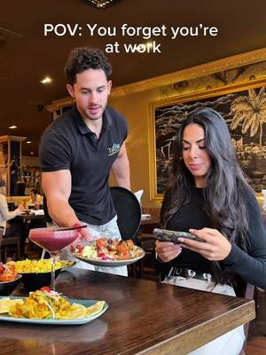

02 · What has worked for places like yours
Real people, in the venue, doing something worth watching.
Reference videos from restaurants we have made video for in the North East, one for each format. They show what a format can do. They are not a promise for your numbers.
70M
views on one reel for a Greek restaurant in Newcastle
3.5M
views on one reel for a Whitley Bay restaurant
+40%
weekly sales for that Greek restaurant, in the owner's own words





- A reason beats a nice shot. A burger on its own rarely travels. The same burger with a question, a challenge or a stack to beat does.
- The venue is the set. Your grill, your counter, your pass. A licensed UAE crew films in the place people will order from, to our shot list.
- It is planned, not luck. We pick the formats for your menu and your week before the crew arrives.
View counts from our own client dashboard, checked 10 October 2026. Sales figure from the owner's own review.

Twelve recent posts, then nothing since 21 April: 172 days.
Dr Smash posted in a burst, then stopped. The pattern in those posts is clear:
What this means. People respond to the product when they see it. Short video of the smash, the stack and real customers, posted on a plan, is how it reaches the people who already follow you and the people near each branch who have not heard of you yet.
Source: instagram.com/drsmash.ae public profile and posts, checked 10 October 2026.